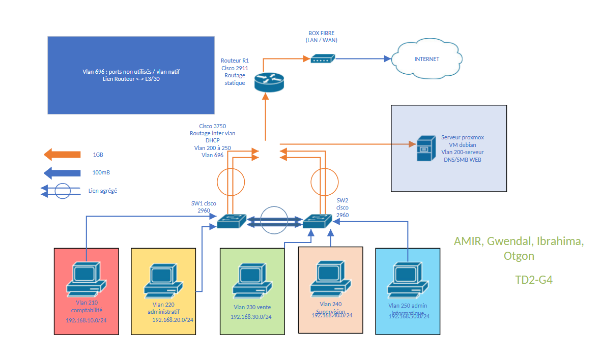
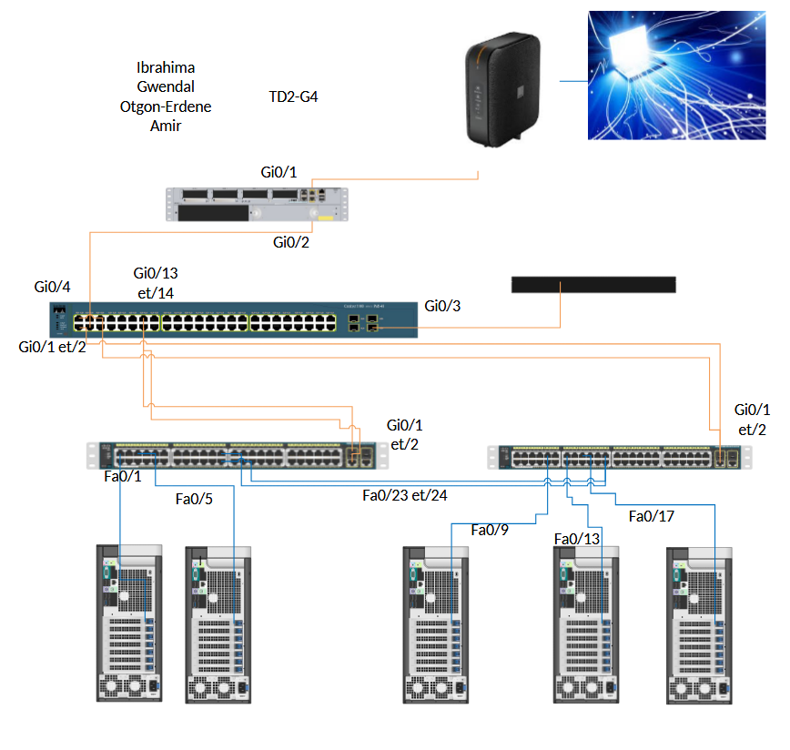
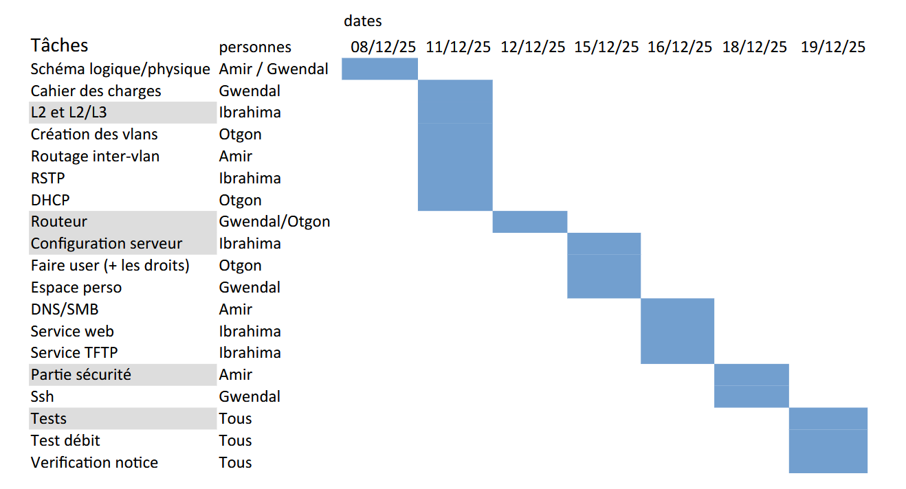

S'initier aux
réseaux informatiques
Nous avons été recrutés au sein de la société fictive Fibre&Company, spécialisée dans le déploiement de la fibre optique. La société devait doubler ses effectifs et sa faible sécurité réseau mettait en péril son activité. Notre mission : concevoir et implémenter un prototype de réseau amélioré avant sa mise en production, en implémentant le maximum de fonctionnalités possible.
Matériel en place
- 60 postes utilisateurs
- 1 poste servant de serveur
- 2 switchs 48 ports non paramétrables
- 1 connexion 1 Gb (box fibre)
Services box
- Cache DNS
- DHCP
- Routage LAN / WAN
Nouveau matériel disponible
- Switches et routeurs paramétrables (matériel ancien mais configurable)
- Permet l'implémentation de VLANs, ACL, routage inter-VLAN, etc.
En cas de manque de temps, les tâches étaient à prioriser dans l'ordre suivant :
- Segmentation du réseau — VLANs
- Configuration des switches paramétrables
- Routage inter-VLAN
- Serveur DHCP dédié
- Serveur DNS interne
- Redondance et haute disponibilité
- Documentation complète du réseau
- Maquette du réseau : Élaboration d’un diagramme de Gantt, création des schémas logiques et physiques, et configuration initiale des équipements (switches, routeur, affectation des VLANs).
- TP noté : Mise en place d’une machine virtuelle via VirtualBox, configuration du SSH et réalisation de tests pratiques (vérification du fonctionnement du réseau, du DHCP et du routage).



Ce projet m’a permis de mieux comprendre les fondamentaux des réseaux informatiques, d’acquérir des compétences pratiques en configuration de réseau et de découvrir les défis liés à la gestion d’une infrastructure réseau dans un contexte professionnel.